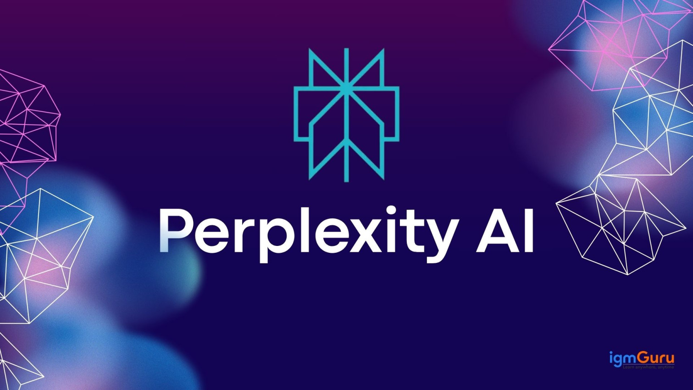

Perplexity AI es una plataforma de búsqueda impulsada por IA que no solo te da una lista de enlaces (como un motor de búsqueda tradicional), sino que analiza y sintetiza la información de la web en tiempo real para darte una respuesta directa, concisa y completa.
Perplexity AI es una de las herramientas más interesantes y destacadas en el panorama de la Inteligencia Artificial, y representa una evolución en la forma en que buscamos información.

¿Cómo funciona Perplexity?
Utiliza modelos de lenguaje avanzados para interpretar preguntas y generar respuestas concisas basadas en información actualizada.
funciona combinando un modelo de lenguaje avanzado con un motor de búsqueda, lo que le permite comprender tu consulta, buscar información relevante en la web, y generar una respuesta concisa y organizada que cita las fuentes. A diferencia de los motores de búsqueda tradicionales, no solo te muestra páginas web, sino que te da un resumen con enlaces directos a las fuentes para que puedas verificar la información.